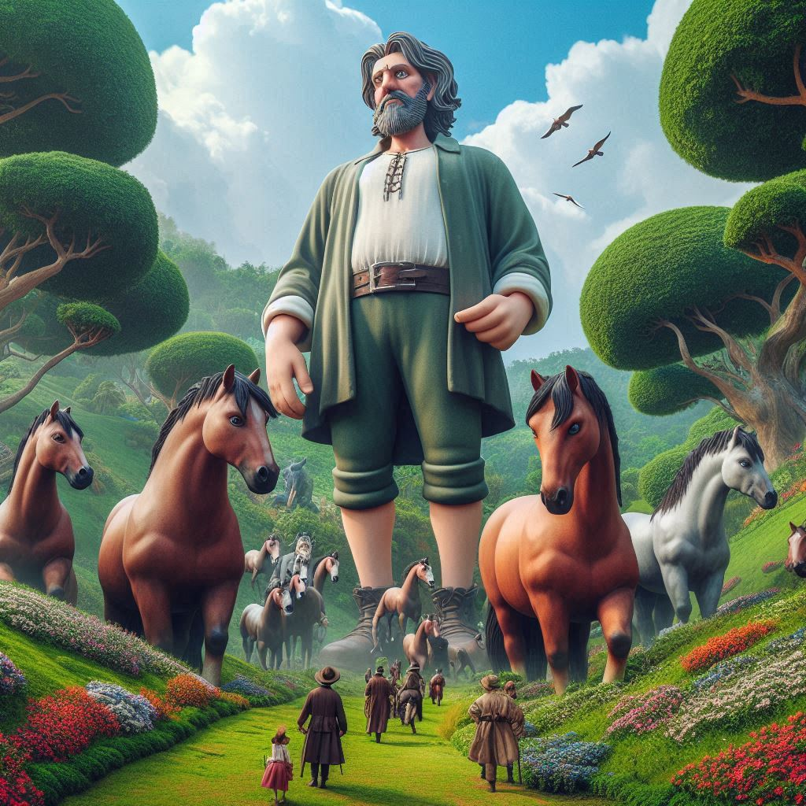

조너선 스위프트
1726년 10월 28일
어릴때 동화로만 읽었던 걸리버 여행기는 읽기 쉽고 이해하기 쉬운 거인국/소인국 이야기만을 들려주면서 몽환적이고 환상적인, 겪어보지 못한 새롭고 이색적인 세계에 대한 여행기였다. 하지만 성장하고 나서 다시 읽어본, 각색되거나 생략되지 않은 걸리버 여행기는 동화적인 이야기보다는 당시 사회를 풍자하는 소설이었다. 특별한 이유도 없이 싸우기만 하는 릴리퍼트의 소인국 이야기, 부유층의 허영과 사치를 풍자한 거인국 이야기, 지금 시야로 보면 잘 이해가지 않았던 라퓨타 이야기, 마지막으로 걸리버 여행기에서 핵심적인 부분을 담당하는 후이넘 이야기까지, 각색되지 않은 걸리버 여행기는 길고, 약간은 오래된 시각을 보였지만, 당시 영국사회에 대한 저자의 인식과 비판을 엿볼 수 있는 책이었다.
~~~~AI평가~~~~~
✨ ~~~~AI평가~~~~~
✨ ~~~~AI평가~~~~~
✨ ~~~~AI평가~~~~~